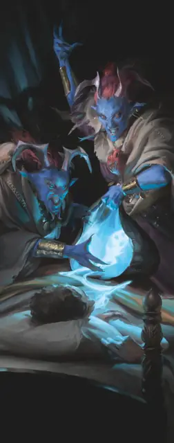

Ночная карга
Night Hag
Среднее Исчадие, Нейтральное Злое

Класс Защиты 17 Инициатива +5 (15)
Хиты 112 (15к8 + 45)
Скорость 30 футов
| мод | спас | ||
|---|---|---|---|
| СИЛ | 18 | +4 | +4 |
| ЛОВ | 15 | +2 | +2 |
| ТЕЛ | 16 | +3 | +3 |
| мод | спас | ||
|---|---|---|---|
| ИНТ | 16 | +3 | +3 |
| МДР | 14 | +2 | +2 |
| ХАР | 16 | +3 | +3 |
Сопротивление урону Огонь, Холод
Иммунитеты Очарованный
Чувства Тёмное зрение 120 футов, пассивное Восприятие 15
Языки Общий, Бездны, Инфернальный, Первичный
Опасность 5 (1 800 опыта; БВ +3)
Особенности
Магия ковена. Пока в пределах 30 футов от карги находится по меньше мере два её союзника, она может сотворить одно из следующих заклинаний, не нуждаясь в Материальных компонентах, используя обычную длительность сотворения заклинания (заклинательная характеристика — Интеллект; Сл спасброска заклинаний 14): Гадание, Обретение фамильяра, Опознание, Поиск объекта, Наблюдение или Невидимый слуга. Карга должна завершить Долгий отдых, прежде чем снова сможет использовать эту особенность для сотворения заклинания.
Сопротивление магии. Ночная карга совершает с Преимуществом спасброски от заклинаний и прочих магических эффектов.
Сумка душ. У карги есть сумка душ. Пока карга держит или носит с собой сумку, она может использовать своё действие Ночные кошмары.
У сумки КЗ 15, 20 Хитов и Сопротивление всему урону. Сумка рассыпается в пыль, если её Хиты опускаются до 0.
Действия
Мультиатака. Карга совершает две атаки Когтями.
Когти. Бросок рукопашной атаки: +7, досягаемость 5 фт. Попадание: 13 (2к8 + 4) Рубящего урона.
Ночные кошмары (1 в день; требуется Сумка душ). Находясь на Эфирном плане, карга сотворяет Грёзы (заклинательная характеристика — та же, что для Сотворения заклинаний). Только карга может быть посланником заклинания, а цель должна быть существом, которое карга может видеть на Материальном плане. Заклинание проваливается и тратится впустую, если цель находится под действием эффекта заклинания Защита от зла и от добра или в области действия заклинания Магический круг.
Когда цель получает урон от заклинания Грёзы, её максимум Хитов снижается на число, равное полученному урону. Если заклинание убивает цель, её душу захватывает сумка душ карги, и её нельзя вернуть к жизни, пока душа не будет освобождена.
Сотворение заклинаний. Карга сотворяет одно из следующих заклинаний, не нуждаясь в Материальных компонентах (заклинательная характеристика — Интеллект, Сл спасброска заклинаний 14):
Неограниченно: Волшебная стрела, Обнаружение магии, Эфирность
2/день каждое: Воображаемый убийца, Планарный переход
Бонусные действия
Перевоплощение. Карга либо перевоплощается в Гуманоида Маленького или Среднего размера, либо возвращается в свой истинный облик. Её статистика, за исключением размера, не меняется в любом облике. Снаряжение, которое она носит или несёт, не трансформируется.
Бонус мастерства +3
Среда обитания Нижние планы
Сокровища Магические
Ночная карга
Ведьма кошмаров и порчи
Ночные карги охотятся на смертных, чтобы мучить и обращать их ко злу. Днём они превращаются в других существ и изводят своих жертв с помощью сверхъестественных чар, заставляя поверить, что мир ополчился против них. А ночью карги дополняют эти пытки пугающими снами. Доведя своих жертв до крайности, они овладевают измученными душами и заключают их в зловещие ловушки — сумки душ. Затем карги путешествуют с одного плана бытия на другой, торгуя украденными душами с мерзкими магами и Исчадиями.
Ночные карги обслуживают сеть сомнительных клиентов и собирают слухи по всем Нижним планам. Они всегда готовы поделиться своими секретами в обмен на магические предметы или другое мрачное вознаграждение.